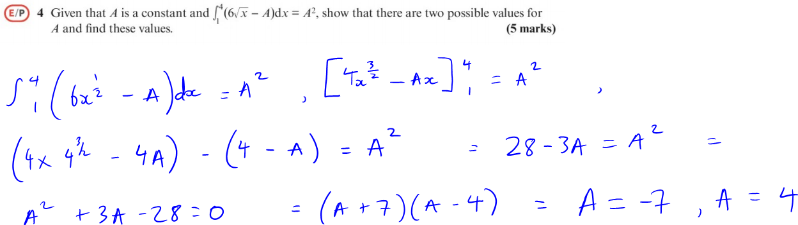
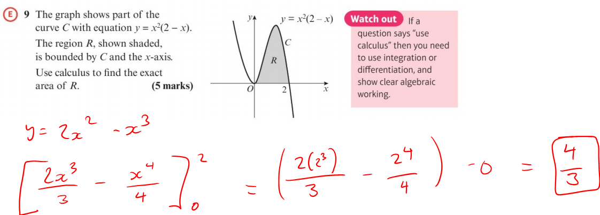
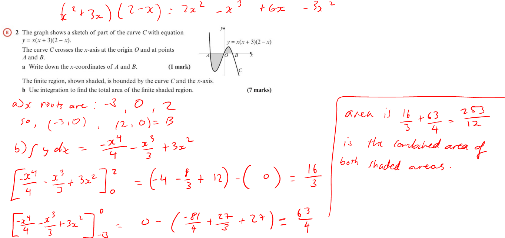
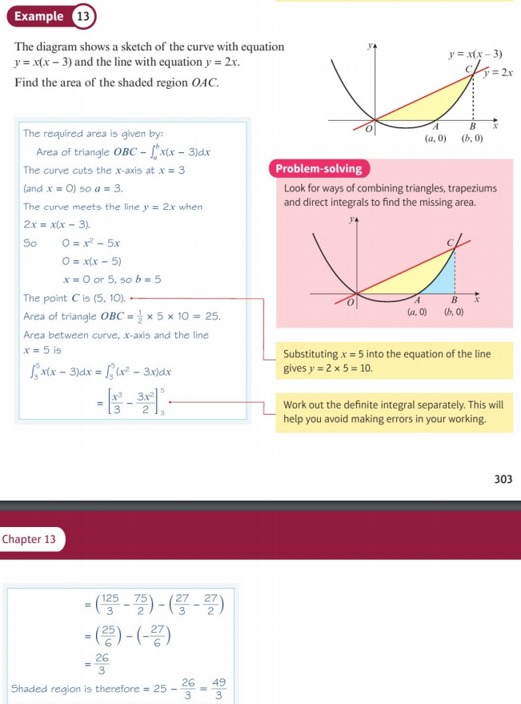

AS level maths topics
I chose to make this website since I wanted a very accessible way of showing my interests and personal projects through something that is very easy to read and easily accessed or changed. Through this website, I can show personal projects like using Python with various computing libraries such as matplotlib or numpy which allow me to plot graphs and manipulate data like how below I write a program that can read through a database of bitcoin and ethereum values and express it in a graph. This website also lets me write about topics in the world that I find interesting like amazon's huge growth over lockdown. Because of my interest in maths, I also like to find maths problems, solve them and then put them here so that I can look back on them.
Long polynomial division:
Some questions I have done on polynomial division.

My first example of polynomial division ^
Where you keep using the divide, multiply, subtract cycle.

Another example:

Last question:

Factor theorem (sometimes using long polynomial division as well):
The factor theorem states if f(x) is a polynomial then: (x-p) is a factor of f(x) if f(p) = 0
And it states that if (x-p) is a factor of f(x), then f(p) = 0
For instance, if (x-2) is a factor of some polynomial, then x=2 is able to be substituted into it and equal zero.

Another example:

Here is a factor theorem question I saw on the gcse further maths 2020 specimen paper:

Pascal's triangle and binomial expansion:
What is pascal's triangle?
A triangle of integers where the left and right hand sides of the triangle are always one and start with three ones.
The number between two numbers whcih are above it are added together in order to make the next number down like so:

This is used in binomial expansion in order to quickly find out coefficients and powers of each element once expanded.

Pascal's triangle ^ can show how powers of all the elements in the expansion all add up to the power of the factorised bracket.
Therefore, as the power of one element is subtracted by one, the power of the other element must be added by one in order to keep the power the same.
You can use the ncr button on the calulator in order to work out a certain number on a specific row. Where n is the row number -1 and r is the number position -1.
But, if you don't have a calulator, you can use factorals in order to work it out. Where 4! = 4*3*2*1 = 24.
You would have to put down the row number -1 factoral, over the number's position on that row -1 factoral multiplied by the difference between the two factorals' coefficients, shown above ^^^
A binomial expansion:

Here, you had to first, find out the coefficients of the numbers using Pascal's triangle and using 4ncr0,1,2,3,4 to be multiplied.
Then, start with 14 multiplied by one from Pascal's triangle. Then, after each iteration, subtract the power of 1 by 1. Then, the power of (2y) increases by one until (2y)4.
At the start, 2y isn't shown since it is orignally to the power of 0 which equals 1, so it doesn't need to be included. Same with 1 at the end which is to the power of 0.
Note that the powers of the elements always add up to the original power on the factorised bracket at the start.

Another example:

Now for an example where the power is unknown:

Now using binomial estimation in order to estimate the value of a value raised to a high power:

Another binomial estimation:

Back to binomial expansion again:

Another example of binomial expansion:

I also found this question on the edexcel AS paper 1 2018:

Lastly, here is a very long binomial expansion question. It required a lot of working since the power is unknown, therefore, you have to set up an equation where, for instance, nc2 had to be set up as an equation using n's. Then, make the coefficients equal and setp up a simultaneous equation in order to find out what the unknown variables were.

Differentiation:

Example of finding dy/dx for a given equation:
Another example:

Next example:
Next example:
Next example:

Next example:
Now using lims:
Next example:

next example using limits:
More using lims
Next example:
Finding points whith gradients:
Using binomial expansion and differentiation:
How to find the equations of tangents to curves at certain points:
Example:
How to find the equation of a normal to a curve:
Example of finding a normal:
Another example of finding a normal:
Using tangents and normals:
Example of using 2 normals:
Using tangents and normals:
Proving for an increasing function:
Finding an interval where the function is negative:
Finding an interval where the function is negative:
How to find second order derivatives:
Finding the second order derivative:
Using the second order derivative to find the acceleration of a particle:
Using second order derivatives to find the value of unknown letter "p"
How to find a stationary point and how to find if it a local min/maximum point:
Using second order derivatives to find if a stationary point is a min/miximum point:

We can find the least values of quadratic equations by instead of using the "complete the square" method, we can just find the point of zero gradient which is much faster:
Here we are going to do the same but since they are negative functions, we are finding the minimum point:
Finding a local minimum point:

Finding a point of inflection(where the gradient is the same on both sides:)
Integration
Integration is simply the opposite of differentiation.
How to integrate:
Integration example. We always have to add " +c " here since when differentiating, a number like "+5" disappears, but it's still apart of the original function
Another example:
Another example of integration, but now using the integration notation where the elongated s means to integrate and find y:
Finding integrals:
Binomial expansion and using integration:
Integrating and finding c:
Finding particle displacement with integration:
Here, we are going to use definite integrals, which can be used to find areas under curves between certain x points. The steps are that we integrate, then minus the lower limit substitution from the larger limit substituation in order to find the area like so:
Finding an unknown with integration:
Another example of finding an unknown:
A quick note on an integration rule for the next question:

MAT 2020 Q1B: Simplifying using integration and the rule above:

How to find the area under a curve with integration, with an example from the textbook:
Area between the curve and the x axis:
More example of the area between a curve and the x axis:
An example of finding the area under a curve between two points:Another example:
Another area between a curve and the x axis question:
A textbook example of finding the area between the x axis and part of the curve which is under the x axis:

Examples where we have to find the roots (which are the limits) and then integrate:
Below, we have to finding two areas by finding the two pairs of x roots and then adding up the two areas to find the total area.
Another example:
A textbook example of minusing two areas and finding the area of a triangle to find the area of a small part between two functions:
An example of finding the area between two functions:
Another example:

Another example of finding the area between two functions:
In the question below we have to find the of two different sections where we can find the area of the R2 by using a right angle triangle and finding the area of the small yellow bit in the triangle and minus them to find the area of only R2.
Areas between two functions, another example:
AS Level 2018 Q15, finding the area under a curve and area of a triangle:
Here we have to first find the equation of the normal in order to find points we need to find areas. Then, we can split up R into R1 and R2 where we can add the areas under the curve and the triangle to find the total area, R.
Circles
If we have (ùë•-3)2 + (y+4)2 = 20 - then we would be able to find the centre of the circle by using the negatives of the numbers after ùë• and y so the centre's coordinates are (3,-4).
If we wanted to prove that the circle passes through the point (5,-8) then we could just substitute in ùë•=5 and y=-8 into the equation.
(5-3)2 + (-8 + 4)2 = 4 + 16, which equals 20, therefore, it works with the equation and the circle passes through the point.
Next question
Edexcel A level pure maths 2018 paper 1 Q6
Starting off with the first question, since we know the equation of the tangent, we can use it to find the equation of the line which is perpendicular to it.
We will find the negative reciprocal of the gradient of the tangent ,so, the gradient of PA is -½ùë•. So far the line's equation is y = -½ùë• + c
Now that we have the gradient and a point on the line (7,5), we can substitute it in.
By substituting, we get 5 = -3.5 + c. Therefore c must equal 8.5 to make the equation true.
Even though we now know the line's equation which is y = -½ùë• + 8.5, we have to put in into the form specified in the question with the method below.
2y = -ùë• + 17
2y + ùë• = 17
Now question B:
In order to find the equation of the circle we must use the formula for it which is (x-x1)2+ (y-y1)2 = r2 where x1 and y1 represent coordinates of the centre.
We will need to find the radius - we can do this by using simultaneous equations with the equations we already know in order to find point P.
If equation 1 : y = 2ùë• + 1
If equation 2 : 2y + ùë• = 17 and we substitute 1 into 2:
2(2ùë• + 1) + ùë• = 17 - we do this because we know what y equals so we can substitute it in.
This simplifies to 5ùë• = 15 where ùë• = 3
Now that we know what ùë• equals, we can substitute it into the first equation where we get y = 7
So, point P is (3,7)
We use this to find the radius by using pythagoras' theorem.
So, 16 + 4 = 20 which is the radius squared.
Using the formula of a circle, the equation is (ùë•-7)2 + (y-5)2 = 20
Now question C:
We can see that line k has the same gradient so it must be parallel with line l, so we can draw the tangent on the circle where it is still parallel to line l.
We need to find the point on the tangent and line(marked in red in the image above).
The displacement from point P (the original point which linked the first tangent to the circle) must be the same to the red point as it is the radius.
Since the difference from point P to the radius is to +4 the x coordinate and -2 with the y coordinate. Therefore, if we use that method from the radius to the red point, it must be (11,3)
Now, in order to find k we can substitute in (11,3) into y = 2ùë• + k
We get 3 = 22 + k , so, k must equal -19
k = -19 and the line equation is y = 2ùë• - 19
Next question - C2 Edexcel June 2012 Q3
Since the equation of the circle is ùë•2 + y2 - 20ùë• -16y + 139 = 0, we can "complete the square" to put it in the normal equation of a circle.
(ùë• - 10)2- 100 + (y - 8)2 -64 + 139 = 0
Which can simplify to (ùë•-10)2 + (y-8)2 -25 = 0, which simplifies to (ùë• - 10)2 + (y - 8)2 = 25
Therefore, the coordinates of the centre of the circle are (10,8) and the centre is the √25 which is 5. Circle radius is 5.
C) Using (ùë• - 10)2 + (y - 8)2 = 25 we can substitute in x = 13
Which brings us (13-10)2 + (y-8)2 = 25
Which equals 9 + (y-8)2 = 25
(y-8)2 = 16
y-8 = ±4 therefore y = ±4 + 8
So, point Q has y coordinate of 4 and point P has y coordinate of 12
d) Find the perimeter of the sector:
We already know that a red line is equal to the radius, so they equal 5 each.
Using radians to find the arc length we can use the formula ϑ/2œÄ * 2œÄr.
So, 1.855/2π * 2πr = 9.275 - you can also cancel out the "2π"s as well.
As a result, 9.275 + 5 + 5 = 19.275 which is the perimeter of the sector PTQ.
Last circles question - Edexcel C2 Jan 2010 Q8

a) (2,-1)
b) radius equals √ 169⁄4 - so the radius can be expressed as 13/2 which is 6.5
I will be referring to this diagram in question c)c) We can make a line from N to line AB and split line AB into two lines going a distance of 6 in each direction.
This helps us since we can add or subtract 6(the distance in each direction) from 2(which is the x coordinate of the radius).
The blue point in the diagram above has x coordinates of 2 - 6 = 4, so far it has coordinates of (-4, ?)
And the green point has coordinates (8, ?)
In order to find the y coordinates, we can substitute in the x coordinate into the circle's formula to satisfy the equation and get a y coordinate.
We can use (8, ?), so, using the circle's formula of (ùë•-2)2 + (y+1)2 = 169/4 we get:
36 + (y+1)2 = 169/4
(y+1)2 = 25/4
y+1 = ±25/4 - which can be expressed as y + 1 = ±5/2
y = ±45/2 - 1
So, the two y coordinates for the points are either 1.5 or -3.5; we can use the fact that the points are both under the y axis and share the same y point, therefore, both points have y coordinates of -3.5.
So, point A has coordinates of (-4, -3.5) and point B has coordinates of (8, -3.5)
Question d)
Lastly, question e) - finding length AP.
Knowing that the radius is 6.5, and we have the angle ANB, we can create the lines and angles:
Maths questions from UKMT papers.
I have grown to become a fan of UK maths challenge papers since for many years I have done these papers at school in either a classroom on in a hall where I really liked the thinking required in order to complete these papers but it also gave me experience in doing papers in halls in exam conditions which gave me a sense of what GCSEs/mocks being taken in the hall feel like. Afterwards, I would go online and look at the answers of the paper I took and learn from my mistakes. .
UKMT Senior Kangaroo 2016 Q18
First of all, letter n can represent an integer. We can represent the consecutive squared numbers from the question like:
n + (n+1)2 + (n+2)2 + (n+3)2 = (n+4)2 + (n+5)2 + (n+6)2
Once all expanded, it equals n2 + n2 + 2n + 1 + n2 + 4n + 4 + n2 + 6n + 9 = n2 + 8n + 16 + n2 + 10n + 25 + n2 + 12n + 36
Which can be written as 4n2 + 12n + 14 = 3n2 + 30n + 77
Which can be written as n2 - 18n - 63 = 0 ,therefore, we can use the fact that we have a quadratic which equals zero to factorise into:
(n - 21)(n + 3) where n = 21, n = -3 - since the question tells us these are positive integers, n = 21
As the question asks for the square of this number (212), the answer is 441